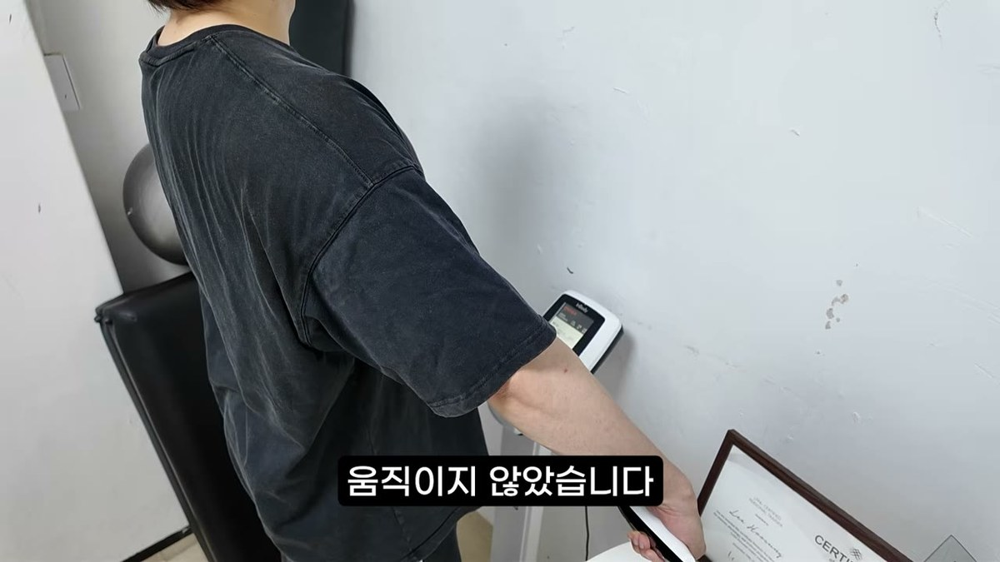
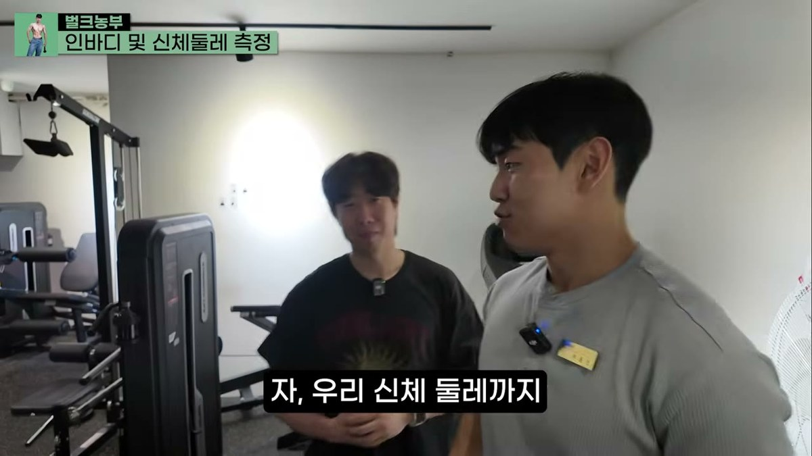
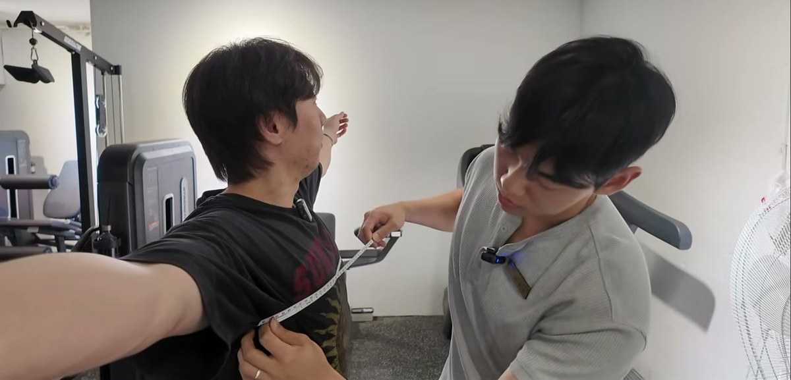
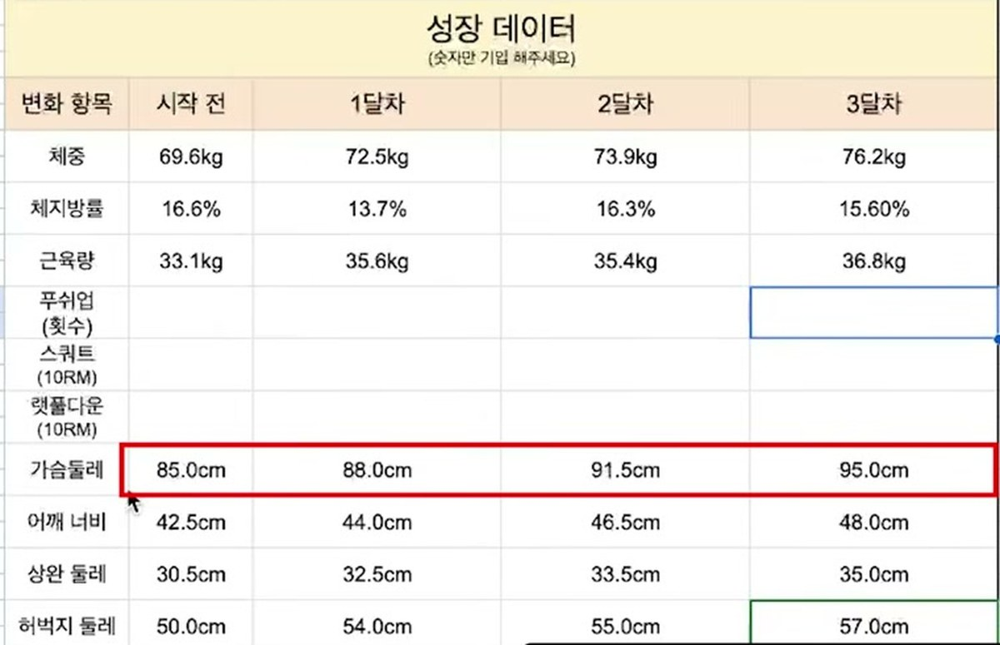
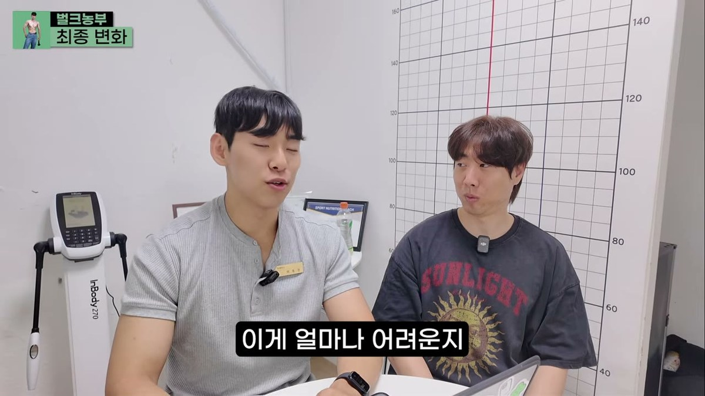
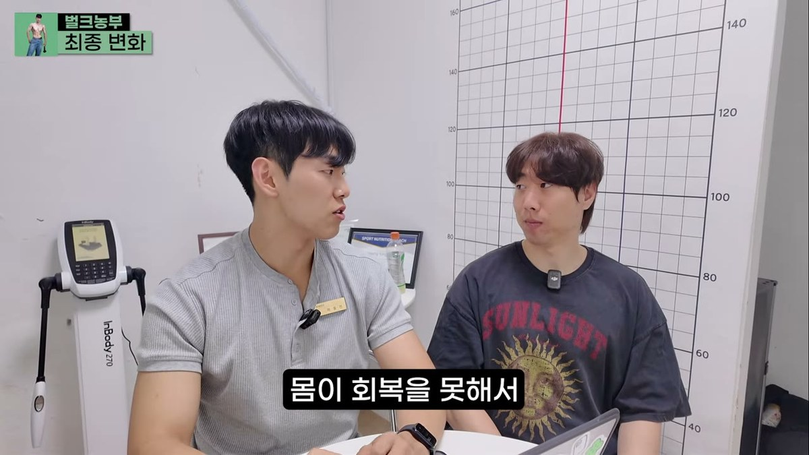
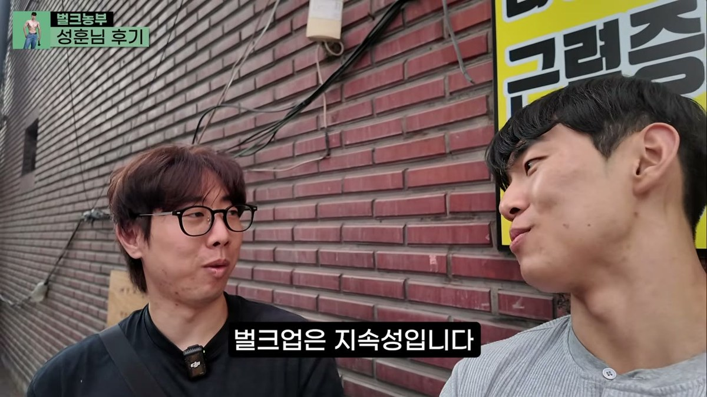
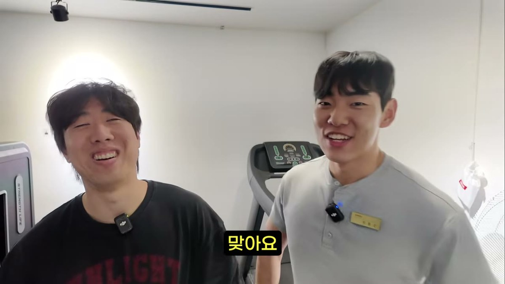

마른 체형 벌크업을 2년 넘게 시도했는데
체중이 1kg도 안 늘었다면.
이 글이 도움이 될 수 있습니다.
실제 수강생 한 분의 12주 기록을
인바디와 줄자 수치 그대로 공개합니다.
매달 같은 날, 같은 방식으로 잰 값입니다.
하나도 빼지 않았습니다.

처음 오셨을 때 하신 말씀입니다.
"2년 넘게 다녔는데 몸이 그대로예요."
열심히 안 한 게 아니었습니다.
주 4회씩 빠진 날이 거의 없었습니다.
루틴도 여러 번 바꿔봤습니다.
단백질 보충제도 챙겨 드시고 계셨습니다.
유튜브로 공부도 많이 하셨습니다.
그런데 체중계는 2년째 69kg 언저리였습니다.
이런 경우 주변에서 듣는 말은 비슷합니다.
"넌 원래 마른 체질이야.
아무리 해도 안 돼."
저도 이 말을 정말 많이 들었습니다.
저는 키 181cm에 55kg으로 시작했습니다.
지금은 88kg입니다.
K-Classic 클래식 보디빌딩 3위를 했습니다.
그래서 저 말이 왜 틀렸는지 몸으로 압니다.
체질이 아니라 방식의 문제인 경우가 훨씬 많습니다.

먼저 인바디 결과입니다.
| 항목 | 시작 | 12주 후 | 변화 |
| 체중 | 69.6kg | 76.2kg | +6.6kg |
| 골격근량 | 33.1kg | 36.8kg | +3.7kg |
| 체지방률 | 16.6% | 15.6% | -1.0%p |
12주 동안 체중 6.6kg.
그중 골격근량이 3.7kg입니다.
인바디만 믿지 않습니다.
그날의 수분 상태나 식사 시간에 따라
값이 흔들리기 때문입니다.
그래서 매달 같은 날, 같은 자리를
줄자로 직접 쟀습니다.

| 부위 | 시작 | 12주 후 | 변화 |
| 가슴둘레 | 85cm | 95cm | +10cm |
| 어깨너비 | 42.5cm | 48cm | +5.5cm |
| 팔둘레 | 30.5cm | 35cm | +4.5cm |
| 허벅지둘레 | 50cm | 57cm | +7cm |
가슴둘레 10cm.
옷 사이즈가 한 단계 넘게 바뀌는 변화입니다.
기록은 매달 남겼습니다.
시작 전, 1달차, 2달차, 3달차.
같은 항목을 같은 방식으로 측정했습니다.

많은 분이 "6.6kg 늘었네"에서
시선이 멈춥니다.
하지만 가장 중요한 줄은 따로 있습니다.
체지방률 16.6% → 15.6%
체중이 6.6kg 늘었는데
체지방 비율은 오히려 떨어졌습니다.
그냥 많이 먹어서 찌운 게 아니라는 뜻입니다.
늘어난 무게의 상당 부분이 근육이었습니다.
벌크업을 "일단 찌우고 나중에 빼는 것"으로
알고 계신 분이 많습니다.
그렇게 하면 12주 뒤에 남는 건
늘어난 체지방과, 그걸 다시 빼야 하는 몇 달입니다.
심하면 체중만 늘고 몸매는 더 안 좋아집니다.
마른 비만입니다.
목표는 체중계 숫자가 아닙니다.
어디가 얼마나 커졌는가입니다.
마른 체형 벌크업이 막히는 지점은
사람마다 다를 것 같지만.
상담해보면 대체로 이 셋 중 하나입니다.
1. 먹는 양이 생각보다 훨씬 적습니다
"저 많이 먹어요"라고 하시는 분들의
실제 섭취량을 3일만 기록해보면.
유지 칼로리에도 못 미치는 경우가 많습니다.
아침을 거르고 점심을 대충 때우면
저녁 한 끼를 아무리 잘 먹어도
하루 총량은 부족합니다.
몸을 키우려면 쓰는 것보다 더 들어와야 합니다.
칼로리 잉여를 유지하지 않으면
아무리 운동해도 재료가 없습니다.
2. 자극이 매번 같습니다
2년 동안 같은 무게로 같은 횟수를 반복하면
몸은 더 커질 이유가 없습니다.
몸은 지금 감당하기 버거운 자극을 받았을 때만
거기에 적응하려고 커집니다.
지난주에 벤치프레스 50kg으로 10개를 했다면.
이번 주에는 무게나 횟수 중 하나는
올라가 있어야 합니다.

3. 기록이 없습니다
뭘 얼마나 먹었는지.
지난주에 몇 kg을 몇 개 들었는지.
모르면 이번 주에 뭘 바꿔야 할지도 모릅니다.
2년을 다녀도
첫 달을 24번 반복하는 것과 같아집니다.
참고로 운동과 식단은
어느 쪽이 몇 퍼센트인 문제가 아닙니다.
운동이 자극이고 식단이 재료입니다.
둘 중 하나만 있으면 몸은 변하지 않습니다.
마지막 항목이 가장 중요합니다.
코칭이 끝난 뒤에도 혼자 판단할 수 있어야
진짜로 끝난 겁니다.
방법만 알려주면
코칭이 끝나는 순간 원점으로 돌아갑니다.

12주가 순탄하지만은 않았습니다.
중간에 식중독에 걸려 며칠 제대로 못 먹었습니다.
병원에 간 날도 있었습니다.
그런 주에는 체중이 오히려 빠졌습니다.
그래도 다시 시작했습니다.
그게 전부입니다.
여러 사람을 보면서 내린 결론입니다.
방법을 몰라서 실패하는 경우는
생각보다 적습니다.
혼자 계속하기가 어려운 겁니다.
정보는 이미 넘칩니다.
유튜브에도 다 있습니다.
문제는 그게 내 몸에 맞는지
확인해 줄 사람이 없다는 것.
2주 정체됐을 때
흔들리지 않게 잡아 줄 사람이 없다는 것입니다.

12주 동안 일어난 변화입니다.
2년 동안 변화가 없었다면.
노력이 부족했던 게 아닐 가능성이 큽니다.
방법이 아니라 방향이 어긋나 있었을 수 있습니다.
마른 체형 벌크업은 체질의 문제가 아닙니다.
먹는 양, 자극의 변화, 기록.
이 셋이 맞물리는가의 문제입니다.
하나만 빠져도 2년이 그대로 갑니다.
지금 몸무게가 몇 kg인지.
얼마나 오래 정체돼 있었는지.
댓글로 남겨주세요.
어느 지점에서 막혀 있는지 답변드리겠습니다.
1:1 벌크업 코칭 문의는
댓글이나 인스타그램 @bulk_farmer
DM으로 받고 있습니다.

※ 본 사례는 개인의 결과이며, 개인에 따라 결과가 다를 수 있습니다. 특정 효과를 보장하지 않습니다.